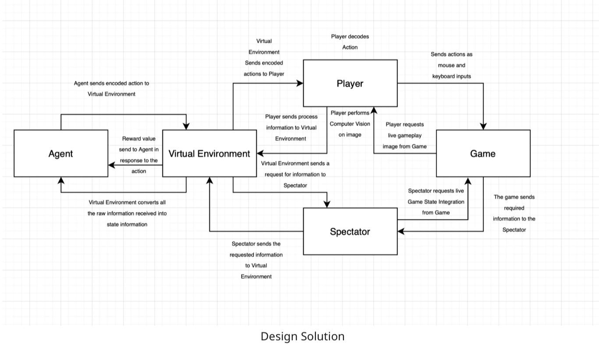
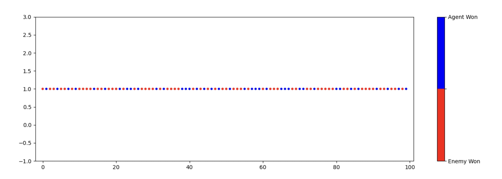
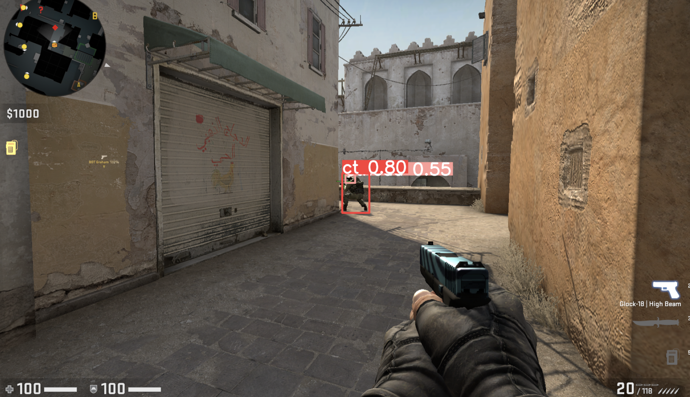

AI and Games: Historical Context
The integration of Artificial Intelligence (AI) in gaming started in 1978 with Space Invaders, evolving from naive pattern-based movements to more refined applications, as seen in The Sims (2000). AI has transformed gaming experiences, making them more interactive and socially engaging. Recent developments include AI-powered players excelling in benchmark games like AlphaGo and Open AI 5 in Dota 2.
Project Aims and Objectives
The project aims to demonstrate that current AI methodologies surpass existing bot implementations in Counter Strike: Global Offensive. Specifically, in a 1v1 post-plant scenario as a Terrorist, the AI should exhibit human-like gameplay while achieving better performance. Evaluation involves measuring win rates against bots, human players, and conducting a Turing Test for human-likeness. The agent's visual system is implemented in a naive manner, focusing on enemy location detection.
Counter-Strike: Global Offensive (CS:GO)
CS:GO is a 2012 multiplayer tactical first-person shooting game developed by Valve and Hidden Path Entertainment. It falls under the sub-genre of first-person shooters (FPS), emphasizing gun-based combat in a first-person perspective.
Game Modes and Focus
CS:GO features multiple game modes, but the project focuses on the classical game mode. This mode involves two opposing teams, Terrorists and Counter-Terrorists, competing in rounds to achieve objectives such as planting or defusing bombs. The project narrows its focus to a 1v1 post-plant situation.
Reduced Gameplay and Constraints
The project simplifies the classical game mode by ignoring economic aspects, allowing unlimited buying, and resetting rounds. It concentrates on the 1v1 post-plant scenario, capturing strategic gameplay without excessive complexity.
Gameplay Skills
CS:GO demands three sets of skills:
- Mechanical Skills: Require precise control, reaction speed, spatial awareness, and hand-eye coordination. Critical in duels and involve precise mouse and keyboard control.
- Strategical Skills: Involve planning, coordinating, and executing strategic plays. Rely on higher-order thinking, spatial awareness, and decision-making. Execution depends on Mechanical Skills.
- Economical Skills: Focus on making smart economic decisions, managing in-game currency for weapon purchases. Not the primary focus of the project.
Reinforcement Learning (RL)
Reinforcement Learning is a type of Machine Learning that focuses on learning optimal actions to maximize a numerical reward. Unlike supervised learning, RL agents learn through trial-and-error without explicit instructions.
Main Elements of RL
- Agent: Controlled entity.
- Environment: Interaction space for the agent.
- Reward Signal: Communicates numerical rewards to the agent.
- Value Function: Maps states to their respective values, indicating the likelihood of achieving goals.
- Policy: Maps states to actions, can be deterministic or non-deterministic.
- Model: Abstract simulation allowing the agent to infer the environment's effects.
RL Methods Classification
RL methods are categorized into Value-based (improve Value Function) and Policy-based (improve Policy) methods. Modern RL agents use Neural Networks, while classical methods employ traditional implementations, facing scalability issues.
Scalability Challenges and Neural Networks
Traditional implementations face intractability and training challenges as problems become larger. Neural Networks in modern RL algorithms address these issues, leading to improved performance. Examples include Deep Q Networks and Deep Deterministic Policy Gradient.
RL Processes: Interaction and Evaluation
RL involves two main processes - interaction and evaluation. In Off-policy RL, interaction and evaluation are separate steps. Sequences of events collected during interaction are then used to update the policy and improve performance.
Markov Decision Process (MDP)
An MDP formalizes Reinforcement Learning problems with five components: State, Action, Reward Function, Transition Function, and Policy.
RL Formulation with MDP
RL problems can be formulated using MDP by generating (state, action, reward) tuples through agent-environment interaction. A suitable reward function helps in learning a policy.
Use of Neural Networks
Naive RL solutions face traceability and scalability issues. Neural Networks serve as excellent function approximators, allowing the agent to generalize value functions and policies. In CSGO, where the state space is vast, Neural Networks become a crucial tool for approximating the Value Function.
Challenges and Computational Complexity
Traditional approaches with tables mapping states to actions become infeasible due to the exponential growth of state and action spaces. Neural Networks address these challenges by approximating unseen states based on similarities with seen states, enhancing efficiency.
Neural Network Approaches
Two approaches for creating Neural Networks in RL are Gradient-based methods, employing backward propagation, and Non-Gradient-based methods, using stochastic processes to propose and accept changes. The former explicitly evaluates gradients, while the latter does so implicitly through stochastic processes.
Deep Deterministic Policy Gradient (DDPG)
DDPG is an off-policy, gradient-based actor-critic RL algorithm. It uses two neural networks: actor (policy) and critic (Q-function). Target networks and replay buffer enhance stability and convergence.
Hindsight Experience Replay (HER)
HER, combined with off-policy RL, addresses sparse reward issues by replaying similar state transitions with both the intended and an additional goal. It enhances sample efficiency in learning from sparse reward environments.
Asymmetric Actor Critic Algorithm
This variant of DDPG trains the actor on partial states and the critic on complete states. It exploits the difference in observability between simulation (complete states) and real-world (partial states), aiming for improved performance in real-world scenarios.
Computer Vision in CSGO
The visual system comprises an Enemy Radar Detector (RGB thresholding and component analysis) and an Enemy Screen Detector (using YOLOv5). The naive visual system prioritizes computational efficiency to focus on strategic aspects of the game.
YOLOv5
YOLOv5 is a fast and accurate object detection model used in the Enemy Screen Detector. It operates in a single pass, sacrificing some accuracy for speed. The trade-off is deemed acceptable for detecting enemies in real-time game scenarios.
Game State Integration (GSI)
- GSI allows developers to extract real-time information from CS:GO games.
- Accessible player information includes health, ammo count, and location.
- Bomb-related details, such as its state ('planted' or 'defused'), are also available.
- GSI provides a continuous stream of information to inform the reinforcement learning agent about the evolving game state.
Game Interface
- The Game Interface implementation relies on WinGUI32, compatible only with Windows machines.
- Pynput, an open library, is used for mouse and keyboard control.
- Raw mouse and keyboard input mimic human player actions, preventing the agent from being flagged as a hacker.
- This approach ensures that the learning agent can freely use CSGO as a training environment without triggering anti-cheat mechanisms.
Abstract Reduction of CSGO to Robotic Task
To use methods in robotic tasks to tackle CSGO, the approach involves breaking down the CSGO problem into sub-problems and drawing similarities with robotic tasks.
Concurrent Sub-Problems in 1v1 Post Plant Situation
In a 1v1 Post Plant situation, two concurrent sub-problems are identified: positioning and balancing risk to prioritize conflicting tasks.
The approach considers the spectrum of strategies in CSGO, ranging from passive to aggressive, and addresses the trade-off between avoiding the enemy and dueling the enemy.
This balancing act is a constraint on the agent, requiring it to prioritize either avoiding or dueling the enemy based on the dynamic game state.
Formalizing CSGO as a Positioning Task
By formulating the CSGO problem as a positioning task, the objective is to control the character in a 3D space to achieve victory.
This conceptual similarity with robotic tasks, such as controlling a robot arm in 3D space for pick-and-place tasks, opens the possibility to draw inspiration from robotics methodologies.
Application of Reinforcement Learning
Reinforcement Learning, successfully employed in tackling robotic tasks, is considered applicable to the CSGO problem reduction.
The methodologies used in controlling robots in 3D space can be leveraged for training an agent to navigate and make decisions in the complex CSGO environment.
Why Reinforcement Learning for CSGO?
In choosing Reinforcement Learning (RL) over Supervised Learning for training a CSGO agent, key considerations include the desire for the agent to comprehend the strategic nuances of the game. Supervised Learning, although attempted, falls short as it primarily teaches the agent to mimic human reactions without involving deeper deliberation or planning. This superficial understanding stems from the reliance on labeled data, which is challenging to quantify strategically. In contrast, RL enables the agent to interact with the environment until it develops either an optimal or satisfactory policy. This policy, shaped through long and short-term considerations, reflects a profound understanding of strategic aspects. Long-term value assessment measures the impact of an action on future success, emphasizing the agent's ability to balance long-term goals (winning) and short-term goals (positioning strategically). The continuous learning facilitated by ε-greedy exploration ensures the agent explores strategic aspects while maintaining performance. In essence, RL allows the agent to adopt a more deliberative and nuanced approach to mastering the strategic complexities of CSGO.
Handling Multi-Agent and Dynamic Environments
In gaming scenarios, the environment is often a Multi-Agent system, characterized by dynamic and non-accessible features. Multiple autonomous agents interact within the environment, making it challenging for a single agent to predict the next state accurately based on its information. This dynamic and non-accessible nature underscores the importance of exploration. Reinforcement Learning (RL) ensures continuous exploration of the policy space, allowing the agent to navigate beyond local optimum policies and potentially discover a global optimum policy. This exploration is crucial due to the inherent limitations of Unsupervised Learning in maintaining continuous exploration once learning stabilizes. Unsupervised Learning, primarily focused on identifying hidden structures in data, may lack the ongoing exploration needed in dynamic environments. Continuous exploration is vital to avoid premature convergence, adapt to diverse play styles, and optimize the overall performance of the agent.
Reinforcement Learning Suitability
Reinforcement Learning (RL) is highly suitable for addressing the challenges in the task at hand, particularly in the context of the game Counter-Strike: Global Offensive (CSGO). CSGO provides APIs supporting live match data streaming, allowing Python code to emulate keyboard and mouse actions for interaction. This facilitates the creation of an environment for continuous agent interaction. The flexibility of RL enables precise tuning of exploration through hyper-parameters like ε-greedy exploration. This parameter controls the probability of the agent deviating from its policy, ensuring a specified percentage of exploration over time. In addition, the learning rate hyper-parameter governs the degree of learning per evaluation iteration and can be decayed to stabilize the policy while maintaining continuous learning. Continuous learning is crucial in CSGO due to the diverse array of play styles and the potential emergence of new strategies. RL's adaptability allows the agent to encounter and learn from strategies not encountered during training. This adaptability ensures that the agent can effectively adjust its policy to perform well against previously unseen strategies, enhancing its overall performance.
Definitions:
-
Markov Decision Process Framework:
- An interface for the game to communicate its current state.
- An interface for the learning agent to act on the environment.
- A reward signal from the environment for feedback after each interaction.
-
Definition of State:
- State is a dictionary with keys including Enemy Location, Enemy Forward Velocity, Enemy Health, etc.
- Complete and Partial States are distinguished by their observability.
- Naive Visual System simulates partial observability, accessing enemy-related information when detecting the enemy.
-
Definition of Action:
- Encoded in binary for simplicity.
- Array of binary values representing actions taken by the agent.
- Actions include idling, walking, crouching, jumping, moving cursor, left-clicking, and enemy location coordinates.
-
Reward Function:
- Utilizes Hindsight Experience Replay (HER) for sparse, binary rewards.
- Reward function: R(win) = 1, R(lose) = -1.
- Winning conditions: bomb explosion or enemy killed.
-
Goals:
- Distinct winning conditions: (1) Bomb explodes or (2) Enemy killed.
- Implemented as a class with an index and predicate function.
- Index used to represent the goal as a tensor in the Deep Deterministic Policy Gradient (DDPG) Algorithm.
- Goals implemented on the agent side for independence from the environment.
Design of Entities
-
Agent:
The Agent's primary objective is to execute the Deep Deterministic Policy Gradient (DDPG) algorithm for learning the complexities of the CSGO problem within a Virtual Environment. DDPG is chosen due to its effectiveness in handling large action spaces, unlike value-based methods. Sample efficiency is crucial, and DDPG's use of a Memory Buffer for experienced transitions enhances learning speed. An Asymmetric Actor-Critic model is preferred over the standard DDPG Actor-Critic model, leveraging the difference in Observability between 'player' and 'spectator' data. This ensures adaptability to partial observability scenarios during live gameplay. A Recurrent Neural Network with a specific architecture (1 input layer, 1 output layer, and 4 hidden layers of 512-1024-1024-512 nodes each) is chosen, striking a balance between complexity and capability. To address sparse reward challenges, an off-policy Hindsight Experience Replay (HER) is employed for learning. HER proves essential in the context of CSGO, where rewards are sparse, and full access to game data is limited. This method bypasses the need for meticulous Reward Function Design, contributing to the versatility of the Agent.
-
Virtual Environment:
The Virtual Environment serves as a crucial interface for the agent, acting as an intermediary for communication between the Player, Spectator, and itself. This central role facilitates seamless information transfer and interaction among the entities in the system. The decision to use a Virtual Environment is driven by both convention, as many Reinforcement Learning algorithms integrate well with the OpenAI gym Environment interface, and practical considerations for maintaining clean and organized code. By consolidating the code responsible for entity interactions within the Virtual Environment, debugging becomes more efficient, and the order of interactions is easily traceable, contributing to overall code clarity.
-
The Player:
The Player will be the interface where the Virtual Environment communicates the agent’s action to, so that the Player can decode the action into mouse and keyboard inputs; and send these inputs to the Game so that the action can be applied in the game.
-
The Spectator:
The Spectator will be the interface where the Virtual Environment will be able to get live complete information about the game. This entity plays a crucial role in our Asymmetric Actor Critic model as it gives us complete Observability of the environment, allowing us to train the Critic with complete information instead of the available partial information. For convenience, this entity will provide both Complete and Partial information to the Virtual Environment.
Implementation Entities
-
Agent:
The Agent's implementation comprises three parts: Deep Deterministic Policy Gradient (DDPG) algorithm, Asymmetric Actor Critic, and Hindsight Experience Replay Buffer. Most of the code is adapted from baselines, requiring minimal changes as the algorithms are standard. The primary focus is on the choice of the Neural Network architecture.
Deep Deterministic Policy Gradient (DDPG)
The DDPG algorithm, an off-policy method, involves interacting with the environment, recording transitions, and updating neural networks during evaluation. The process includes sampling transitions from the Hindsight Experience Replay Buffer, generating q-values, calculating the Value Loss, updating the Critic network, obtaining the policy loss, updating the Actor network, and performing a soft update on target networks.
Hindsight Experience Replay (HER)
HER requires a memory buffer implemented with a Python list, limiting the number of stored transitions to balance sample efficiency and space complexity. The 'push' function stores transitions, processes them for evaluation, and controls the buffer size. Sampling is straightforward using Python libraries and np.transpose for reformatting data.
Asymmetric Actor Critic
Asymmetric Actor Critic focuses on the Neural Network architecture. The implementation includes 4 hidden layers in each architecture (512-1024-1024-512 nodes), with different input and output layers for Actor and Critic networks. Actions are selected by treating the output of the Actor layers as a list of confidence, sampled using a custom Action Layer. Actions in this context are encoded in binary.
-
The Player:
The Player's implementation is more intricate than the Spectator, involving two main tasks: processing gameplay images and sending them to the Virtual Environment, and executing actions received from the Virtual Environment. It comprises two elements—the game interface server and the enemy detection server.
Managing the two servers without overlap or data inconsistency was a primary challenge. To address this, I established separate ports for connection, avoiding complications like threading. Connection implementation relies on the 'socket' library, similar to the Spectator. The game interface server receives actions from the Virtual Environment via a string, performs them, and reports back. In contrast, the enemy detection server continuously sends data to the Virtual Environment, creating a one-sided relationship.
The game interface server executes two types of actions—in-game actions and developer console commands. The latter automates configuration and match restarting. Decoding requested actions involves matching predefined strings with corresponding functions that run hard-coded developer console commands. In-game actions are encoded in binary.
The Enemy Detection Server has two subparts: obtaining the gameplay image and processing it. The WIN32GUI library captures the display image, while the second subpart uses the game's radar and a YOLOV5 model to detect enemy presence. The model and code were sourced from https://github.com/Lucid1ty/Yolov5ForCSGO.
-
The Spectator:
The Spectator's implementation is relatively straightforward compared to other entities in the system. Its main tasks involve retrieving information, specifically Game State Integration data, and communicating with the Virtual Environment. To obtain the necessary information, I utilized code from https://github.com/Erlendeikeland/csgo-gsi-python , adapting it for my needs.
The use of a spectator instance is essential because obtaining full observability as a player is limited. By running a separate instance with the player joining as a spectator, I can access all required information cleanly and facilitate debugging. This design choice allows me to separate observability in the Virtual Environment.
For communication, I employed Python's 'socket' class, creating a straightforward implementation due to the singular relationship between the Virtual Environment and the Spectator. The process involves the Virtual Environment sending requests to the Spectator, who responds with the required data in the form of a Python dictionary. The Spectator's responsibility is to ensure accurate data transmission, achieved through working with Python dictionaries and manual testing. The dynamic nature of live-generated data makes it challenging to create fixed tests with static assertions.
The Virtual Environment
In this section, a top-down approach is taken to explain the implementation of the Virtual Environment, emphasizing how entities interact and detailing key internal functionalities. The Virtual Environment facilitates communication among three entities in four key training processes.
Physical Setup
The physical setup involves three laptops—'Agent,' 'Player,' and 'Spectator,' establishing client-server relationships. The 'Agent' manages the Reinforcement Learning Algorithm, the 'Player' serves as the game interface, and the 'Spectator' streams Game State Integration information to the 'Agent.'
Training Process
The training process involves initialization, interaction, game restart, and evaluation. Initialization includes configuring the game for the training environment. The game restarts involve setting up a new game, and interaction encompasses obtaining information from 'Spectator' and 'Player,' processing states, selecting actions, and updating states. Evaluation includes sampling transition batches for updating the Actor and Critic networks.
States from Raw Information
Conversion of raw information into states involves processing visual data from the 'Player' and Game State Integration from the 'Spectator.' The information is processed to create current Complete and Partial States.
Encoded Actions to Player Action
The encoded actions are decoded and applied to the game interface. Movement configurations, mouse movements, and aiming and firing actions are translated into keyboard and mouse inputs. The 'Agent' employs beginner-level movement configurations, utilizing 'Run,' 'Walk,' and 'Crouch.' Aiming and firing actions are treated as a combined action, designed to keep the action space small.
Results
The agent's performance was tested by playing against a bot for 100 rounds, resulting in a win rate of 39 rounds. The agent did not outperform the bots, and the gameplay video is available in "Showcase" tab. The Turing test was omitted due to the clear results of it being played by an AI agent. The unexpected outcome is attributed to the agent learning a policy tailored to exploit fixed bot behaviors and their poor aim.
Critic
Upon analyzing the results, several issues were identified in the implementation. The encoding of mouse actions hindered the agent's free mouse control, limiting exploration. The visual system was deemed too naïve, lacking the ability to turn towards unseen enemies when under fire. Omitting sound cues made geo-locating enemies challenging, as sound cues could aid in predicting enemy locations. Further breakdown of tasks was recommended to enhance learning, as the agent failed to stop the enemy from defusing the bomb. The chosen neural network was considered too naive, evidenced by a persistent policy loss of 0 throughout training.
Limitations
The primary limitation faced was computational power. Efforts were made to distribute computational demands across computers, but latency issues persisted, impacting the agent's performance, particularly in aiming. Limited interaction time due to latency affected the agent's learning potential. Higher computational power could have supported the implementation of a more complex neural network. Additionally, the cost and speed of training constrained the agent's training duration, possibly hindering its performance. The agent's training duration was notably shorter compared to benchmarks like OpenAI 5 in Dota 2 self-play.
Moreover, the agent's training might have been restricted in two aspects. Firstly, the exploration of the action space relied on random actions, diminishing the likelihood of encountering meaningful action sequences. Secondly, the passive behavior of the training bots allowed the agent to adopt strategies effective against low-skill opponents, potentially limiting its adaptability against human players.
Future Endeavours
Reflecting on the implementation, the use of a relatively naive Recurrent Neural Network (RNN) was acknowledged. Future endeavors would involve exploring advanced architectures like Long-Short Term Memory Neural Networks (LSTM) to improve temporal awareness in action selection. Integrating an AI planning system could enhance the agent's control coherence and planning capabilities.
Given ample computational resources, implementing a self-play learning approach similar to Deep Mind's work on Quake III was suggested. Training against a low-skill bot may have limited the agent's exposure to representative high-skill game interactions. Self-play learning could address this by allowing agents to constantly learn and explore a broader strategic space, leading to more adaptive and versatile behavior.
Computer Vision
Presentation
Short Training clip
Note: Quality of video is heavily comprimised as I was using my iphone to film the whole process. I did not screen record as it will affect the performance of the Computer Vision Model. I have omitted the sound of it due to the background noise, and also to respect the privacy of the common living area in the flat.
Project Documentation
Download the project documentation in PDF format: